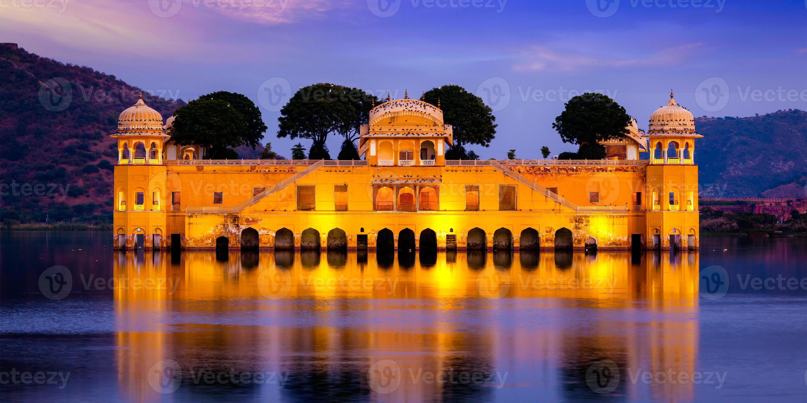

<html>
<body>
<font align="center" face="Century Schoolbook" size="5"><h1>Padharo Maro Rajasthan</h1>

<p>
<font align="center" face="Century Schoolbook" size="4">
Known as the <b>"Land of Kings</b>" Rajasthan is famous for its majestic forts, palaces, and vibrant 
culture. From the bustling streets of Jaipur, the Pink City, to the romantic lakes of Udaipur and the 
golden sands of Jaisalmer, Rajasthan offers a glimpse into India's royal past.<br><br>
<b>Historical and Cultural Attractions:</b> Rajasthan is home to a myriad of forts, palaces, and 
temples that reflect its rich history and cultural heritage. Iconic landmarks include the majestic 
Amber Fort in Jaipur, the romantic City Palace in Udaipur, and the imposing Mehrangarh Fort in 
Jodhpur.<br><br>
<b>Thar Desert:</b> A significant portion of Rajasthan is covered by the Thar Desert, also known as 
the Great Indian Desert. Visitors can embark on camel safaris and desert excursions to explore the 
mesmerizing sand dunes, traditional villages, and vibrant desert culture.<br><br>
<b>Colorful Festivals:</b> Rajasthan is renowned for its vibrant festivals and celebrations that 
showcase the state's rich cultural traditions. The annual Pushkar Camel Fair, held in the holy town of 
Pushkar, is one of the largest and most famous camel fairs in the world, attracting thousands of 
visitors from across the globe.<br><br>
<b>Wildlife Sanctuaries:</b> Rajasthan is home to several wildlife sanctuaries and national parks, 
including Ranthambore National Park, Sariska Tiger Reserve, and Keoladeo National Park (Bharatpur 
Bird Sanctuary). These sanctuaries offer opportunities for wildlife spotting, including tigers, leopards, 
and a diverse range of bird species.<br><br>
<b>Arts and Crafts:</b> Rajasthan is famous for its traditional arts and crafts, including intricate 
handcrafted textiles, pottery, jewelry, and paintings. Visitors can explore bustling markets and artisan 
villages to shop for souvenirs and witness the skilled craftsmen at work.<br><br>
<b>Cuisine:</b> Rajasthan offers a rich and flavorful cuisine that reflects its royal heritage and desert 
climate. Popular dishes include dal baati churma, gatte ki sabzi, and laal maas, which are best 
enjoyed at local restaurants and eateries.<br><br>
Overall, Rajasthan offers a unique blend of history, culture, and natural beauty that makes it a mustvisit destination for travelers seeking an immersive and unforgettable experience in India.<br><br>
</font>
</body>
</html>